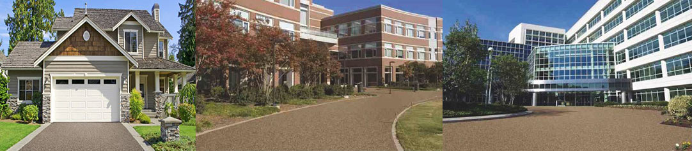
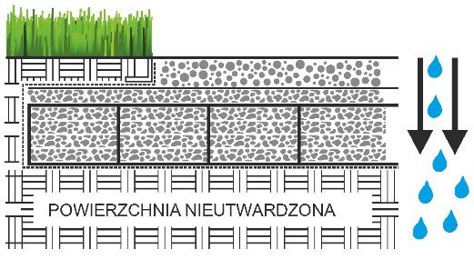
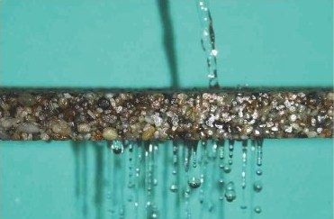
Zastosowanie powierzchni przepuszczającej wodę ma na celu zmniejszenie objętości wody deszczowej przed włączeniem do kanalizacji. Woda deszczowa może swobodnie wsiąkać do gruntu, dzięki czemu ilość wody odprowadzana do kanalizacji jest mniejsza.Takie postępowanie wpływa również na OSZCZĘDNOŚĆ KOSZTÓW — zmniejszenie objętości wody odprowadzanej do kanalizacji oraz obciążenia oczyszczalni wód opadowych.System TopStone oferuje rozwiązania dotyczące powierzchni przepuszczających wodę.
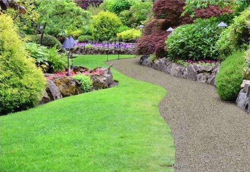
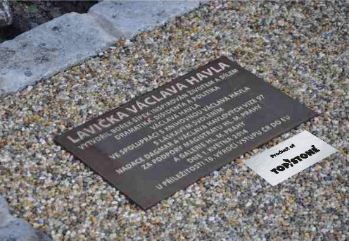
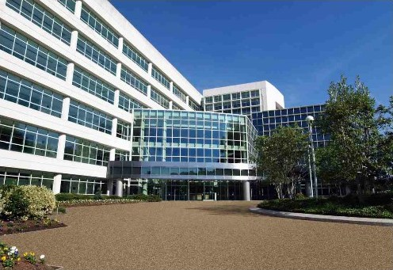
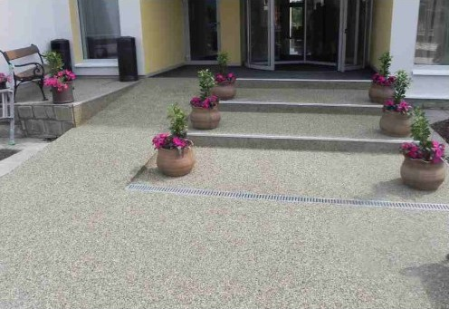
-Mrozoodporność
-Antypoślizgowość
-Zdolność przepuszczania wody
-Wysoka wytrzymałość
-Odporność na działanie soli i chemikaliów
-Trwałość
-Przyjazność dla środowiska
-zapobiega degradacji podłoża
-powierzchnie nieutwardzone
-gruntowe scieżki i drogi, chodniki
-drogi dojazdowe
-Przestrzenie publiczne
-ogrody, parki, sady
- Możliwość łączenia z innymi materiałami typu drewno, kamień, płytki ceramiczne
- atrakcyjna cena
- Naturalny wygląd
- Długa żywotność
- System przeznaczony do zastosowań na podłożu nieutwardzonym
- Możliwość realizacji bez krawężników, łatwa formowalność
- Wysoka wytrzymałość mechaniczna
- Dobre przewodnictwo ciepine (doskonale w połączeniu z ogrzewaniem podłogowym)
- Materiał łatwy w utrzymaniu czystości (odkurzanie, zamiatanie, przecieranie mopem, czyszczenie parą czyszczenie myjką wysokociśnieniową itd.)
- Możliwość wykonywania różnych elementów dekoracyjnych i połączeń kolorystycznych
- Możliwość stosowania na powierzchniach wilgotnych
- Powierzchnia TopStone może służyc jako warstwa wyrównująca
- Główną częścią systemu TopStone Mesh jest siatkaTopMesh, którą wykorzystuje się w celu zwiększenia wytrzymałości systemu na zginanie oraz poprawę elastyczności
- Przy wykorzystaniu siatki zbrojeniowej TopMesh wytrzymałość na rozciąganie przy zginaniu wynosi 12MPa
- Nie zawiera nonylofenoli i rozpuszczalników, po utwardzeniu bezpieczne dla zdrowia
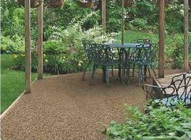
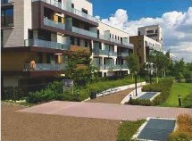
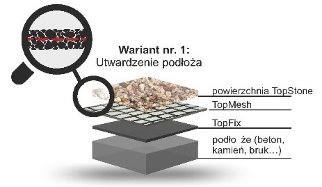
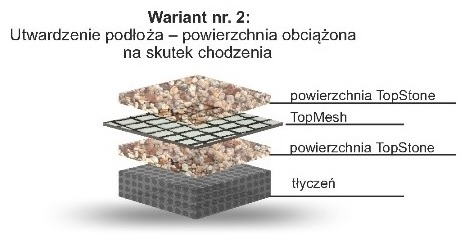
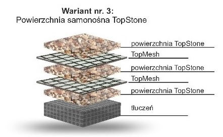
Zastosowanie: chodniki, drogi dojazdowe, baseny, tarasy Zalety: szybkie wykonanie bez wykorzystania deskowania lub listwy wykończeniowej, estetyczny wygląd, płynne przejscie do podłoża, uzbrojenie za pomocą siatki TopMesh w przypadku układania powierzchni na trudnych podlożach (pęknięc(a, starsze podloża, itd.)
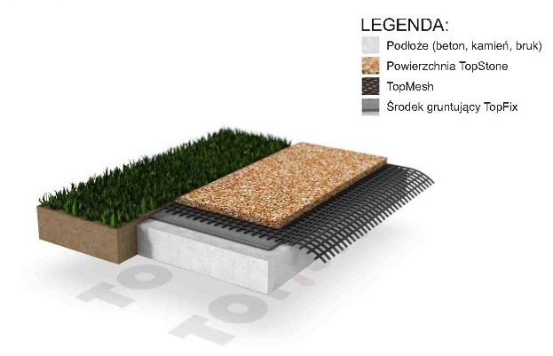
Utwardzenie powierzchni za pomocą siatki TopMesh na podłożu. Zastosowanie: chodniki, drogi dojazdowe, baseny, tarasy, zakończenie na listwie okapowej. Zalety: szybkie wykonanie bez wykorzystania deskowania lub listwy wykończeniowej, estetyczny wygląd, płynne przejście do podłoża, uzbrojenie za pomocą siatki TopMesh w przypadku układania powierzchni na podłożach problemowych (pęknięcia, starsze podloża, itd.)
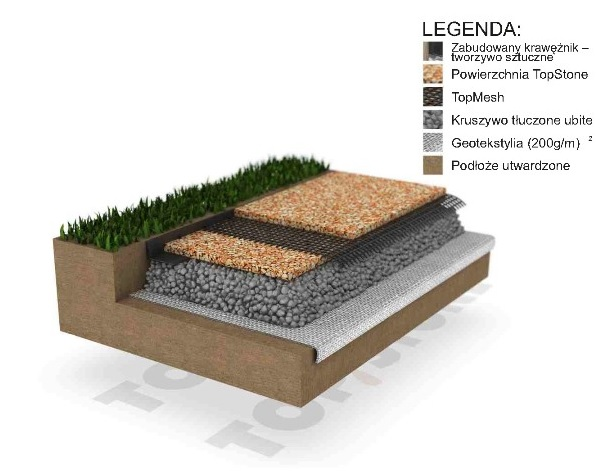
Podłoże - podbudowa z tłucznia ułożona na geowlókninie. Jednym z wariantów jest zakonczenie powierzchni za pomocą krawężnika betonowego. Pomiędzy trzy warstwy powierzchni TopStone wkłada się siatkę zbrojeniową TopMesh. Zalety: ułożenie na podłożach nieutwardzonych (powierzchnia samonośna). Można stosować również bez krawężników.
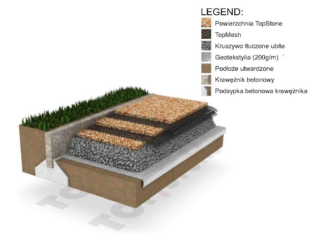
- System TopCell wykorzystywany jest w powierzchniach wymagających większej stabilności podłoża bez konieczności wykonywania obszernych prac wykopowych jak w przypadku pozostałych klasycznych systemów.
- Elementem nośnym niniejszego oryginalnego systemu jest geokrata TopCell o różnych wysokościach (50 i 75 mm) z perforacją - dobierana w zależności od sposobu użytkowania i obciążenia powierzchni końcowej.
- Wypelnienie stanowi kruszywo lamane o frakcji 4-8 mm.
- Wytrzymałość na rozciąganie określone na podstawie badania obciążenia statycznego powierzchni TopStone na powierzchni nieutwardzonej wynosi 71,0 MPa.
- Dylatacja wykonywana jest zgodnie ze sztuką budowlaną.
Brak konieczności odprowadzania wód powierzchniowych
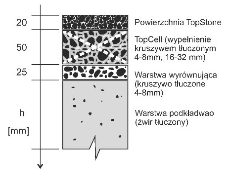
Głębokość warstwy podkładowej określa się według modułu deformacyjnego podłoża. Inne struktury systemu TopStone Cell wykonuje się zgodnie z zaleceniami TopStone
Podłoże — podłoże utwardzone — kruszywo tłuczone ułożone na geotekstyliach. TopCell wypełnione jest kruszywem tłoczonym, zagęszczonym.Zakończenie układania i połączenie z innymi powierzchniami — zabudowany krawężnik z tworzywa sztucznego lub zakończenie do krawężnika betonowego. Przed zastosowaniem TopCell można wyrównać powierzchnię kruszywa tłuczonego za pomocą warstwy wyrównującej o mniejszej frakcji.Zalety: układanie na podlożach nieutwardzonych, możliwość obciążenia mchem pieszym oraz chwilowym ruchem kołowym samochodów osobowych.
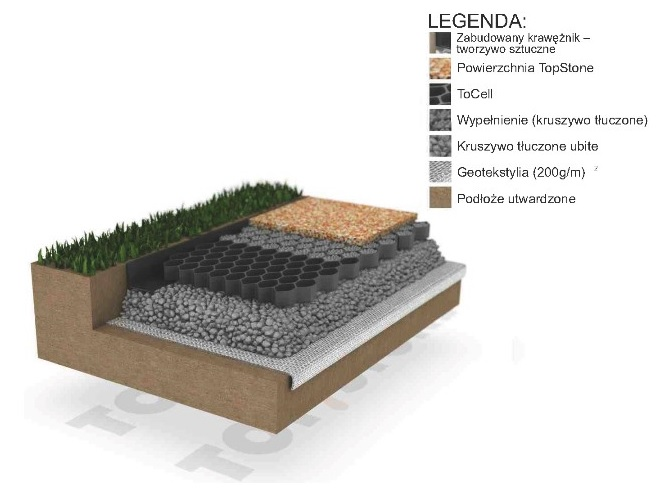
- System CityStone wykorzystywany jest w przypadku powierzchni, które muszą spełniać rygorystyczne wymogi związane z właściwościami
przeciwpoślizgowymi, a także zwiększonym drenażem, dlatego stosuje się go przede wszystkim w przestrzeniach publicznych.
- Powierzchnia sklada się z kruszywa rzecznego o frakcji 4-8mm z 50% udzialem kruszywa tluczonego o frakcji 4-8mm, wszystko jest dokładnie płukane i sortowane.
- Różnorodność zastosowań jest nieograniczona, dlatego niniejsze powierzchnie układane są zarówno na podlożach nieutwardzonych, jak i utwardzonych.
- Wysoka wartość przepuszczalności wody 1852 mm/godz. - przykładowo wartość przepuszczalności wody dla gleby słabo przepuszczalnej wynosi ok. 360 mm/godz.
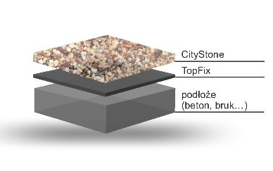
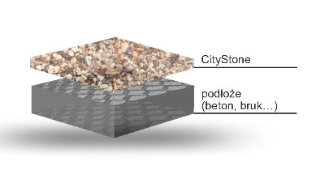
Zastosowanie: chodniki, drogi dojazdowe, baseny, tarasy, zakończenie na listwie okapowej.Zalety: szybka aplikacja bez konieczności deskowania lub profilu wykończającego, estetyczny wygląd, płynne przejscie do podłoża.
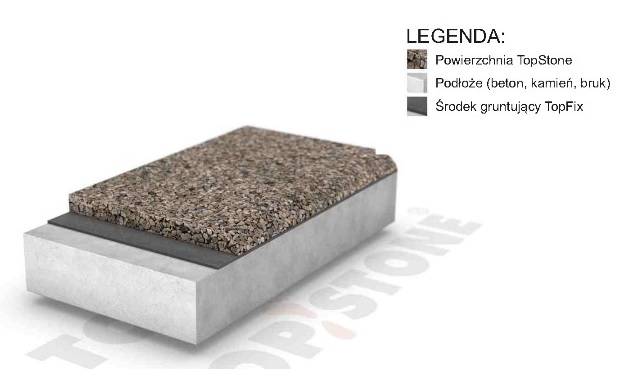
Zastosowanie: chodniki, baseny, tarasy, zakończenie na listwie okapowej.Zalety: możliwość połączenia z innym materiałem na powierzchniach pionowych (tynki, płytki i inne). Za pomocą wykorzystanego szalowania powstaje krawędź powierzchni.
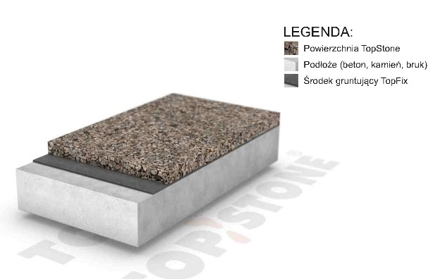
Utwardzenie powierzchni za pomocą siatki TopMesh do podłoża. Zastosowanie: chodniki, drogi dojazdowe, baseny, tarasy, zakończenie na listwie okapowej.Zalety: szybkie wykonanie bez wykorzystania szalowania oraz listw wykończeniowych, estetyczny wygląd, płynne przejscie do podłoża, wzmocnienie za pomocą siatki TopMesh w przypadku ukladania powierzchni na podlożach trudnych (pęknięcia, starsze podłoża, ścieżki, itp.)
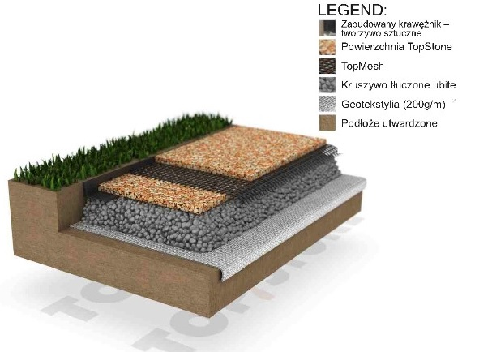